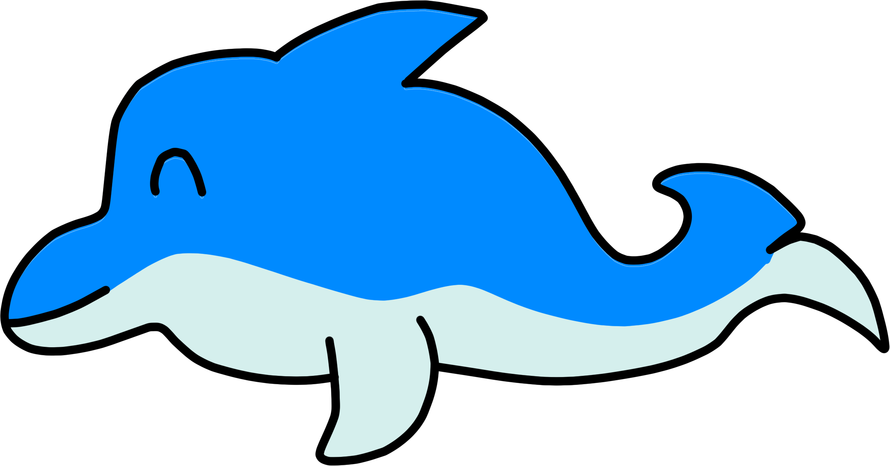
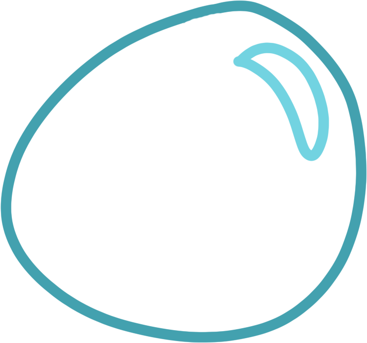

Bienvenido a nuestro sitio

Este verano ven a visitar Arrecifes Bellos en San Luis, para aprender sobre la fauna
marítima y sus diferentes variedades.
Son dos cosas a la vez; divertise y educarse, ¡así es nuestro acuario!
Estamos en la ciudad de Remedios en San Luis, km. 35, Autopista 8.
Al frente de la casita de Pepito, donde está el limonero.
Se puede llegar en coche, transporte público o nuestro vehículos especializados.

Por cualquier consulta puede dirijirse a la sección de contacto
Enviarnos un mensaje y nuestro sistema quizás se lo guarde.
Cosas más mágicas han pasado antes, todo es posible. También puede acercarse al parque.
Galería